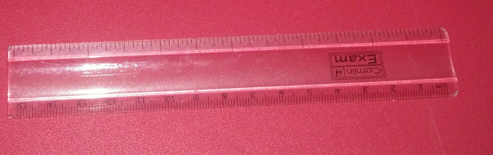

- test image- compass
output on google lens-
compass
output on mobilenet model-compass
result -draw
result -draw
-
test image-divider

output on google lens-
safety razor
output on mobilenet model-divider
result -mobilenet is more accurate
result -mobilenet is more accurate
-
test image-

output on google lens-
pencil case
output on mobilenet model-remote control
result -google lens is more accurate
result -google lens is more accurate
-
test image-protractor

output on google lensimage-protractor
protractor
output on mobilenet model-glass
result -google lens is more accurate
result -google lens is more accurate
-
test image-sharpener

output on google lens-
sharpener
output on mobilenet model-switch
result -google lens is more accurate
result -google lens is more accurate
- test image-scale 
output on google lens-scale
scale
output on mobilenet model-clothesbrush
result -google lens is more accurate
result -google lens is more accurate
conclusion:
i have tested 6 images and in that google lens identified 5 correctly and mobilenet identified 1 correctly so according to my case study google lens is more accurate.